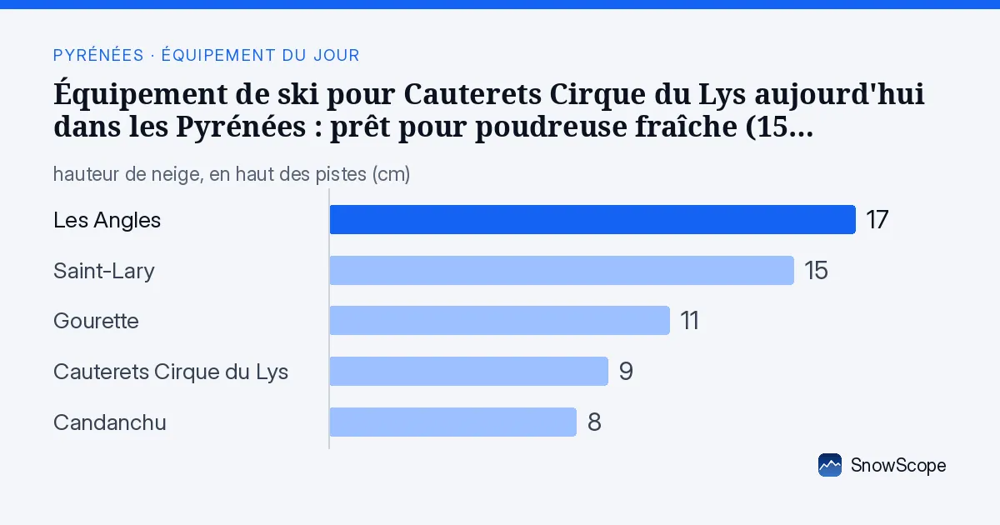

Réchauffement aux Pyrénées : emportez des vêtements imperméables car le niveau de congélation atteint 4 080 m
Apportez des vêtements imperméables : aujourd'hui le niveau de congélation aux Pyrénées devrait monter à 4 080 m, apportant de la pluie à toutes les altitudes et menaçant la fine neige que nous avons mesurée le 15 novembre. Les épaisseurs de neige restent inférieures à 20 cm au sommet de ses cinq stations, donc le manteau neigeux est fragile et se dégradera rapidement quand l'eau liquide s'infiltrera et regèlera en croûte.
Consultez les prévisions neige en temps réel pour Les Angles sur l'application SnowScopeHauteurs de neige, alertes poudreuse et carte 3D, gratuitement.
Pourquoi le niveau de congélation compte pour le manteau neigeux
Hydrologue des neiges, je surveille le niveau de congélation — la limite où la température de l'air passe de négative à positive — car il détermine si les précipitations tombent sous forme de neige ou de pluie. La prévision d'aujourd'hui place le niveau de congélation à 4 080 m à son maximum, bien au-dessus des sommets des domaines skiables. Toute eau tombant au-dessus de cette altitude arrivera sous forme de pluie. Cette pluie s'infiltre dans le fin manteau neigeux, le pèse et accélère la fonte. Quand la pluie regèle pendant la nuit, elle durcit en croûte, changeant la façon dont la neige skie.
La neige que nous avons mesurée le 15 novembre — 17 cm aux Angles, 15 cm à Saint-Lary, 11 cm à Gourette, 9 cm à Cauterets Cirque du Lys, et 8 cm à Candanchu — est trop fine pour absorber beaucoup de liquide sans dégradation rapide. La neige qui skie légère maintenant peut être lourde ou glacée cet après-midi.
| Station | Hauteur de neige | Neige fraîche, 72 h | Attendu, jours suivants | Sommet |
|---|---|---|---|---|
| Les Angles | 17 cm | 2 cm | 0 cm | 2 358 m |
| Saint-Lary | 15 cm | 10 cm | 0 cm | 2 462 m |
| Gourette | 11 cm | 18 cm | 2 cm | 2 453 m |
| Cauterets Cirque du Lys | 9 cm | 22 cm | 3 cm | 2 420 m |
| Candanchu | 8 cm | 19 cm | 2 cm | 2 238 m |

Les cinq stations sont toutes en zone de pluie aujourd'hui
Les Angles (sommet 2 358 m), Saint-Lary (2 462 m), Gourette (2 453 m), Cauterets Cirque du Lys (2 420 m), et Candanchu (2 238 m) se situent tous en dessous du niveau de congélation prévu aujourd'hui. Ce matin, avec un niveau de congélation minimum de 3 310 m, les pentes supérieures entreront tout juste dans la zone de pluie. En fin de matinée, alors que le niveau de congélation monte à 4 080 m à son maximum, de la pluie tombera à toutes les altitudes où vous skiez.
Même les pistes nord les plus hautes et les plus froides de chaque station seront arrosées aujourd'hui. Ce n'est pas une journée typique de début de saison — c'est une journée chaude et humide qui réinitialise et amincit le manteau neigeux.
Que porter et comment se préparer maintenant
Superposez les couches en prévoyant de vous déshabiller à mesure que la journée se réchauffe. Commencez par un sous-vêtement thermique et des chaussettes épaisses en laine ou en fibre synthétique — jamais de coton, qui retient l'eau et vous engourdit par le froid. Ajoutez une couche intermédiaire en polaire que vous pouvez enlever et ranger si vous avez trop chaud en milieu de matinée. Votre couche extérieure doit être complètement imperméable (Gore-Tex ou similaire), pas seulement résistante à l'eau, car la pluie trouvera n'importe quelle fente.
Vos gants comptent : apportez une paire avec un poignet qui recouvre le poignet de votre veste, pour que la pluie ne remonte pas vos bras. Prévoyez de changer de gants en fin de matinée — votre première paire sera humide à ce moment. Portez des lunettes avec un verre ambre ou rose ; elles percent le nuage humide bien mieux que les verres clairs. Beaucoup de skieurs ajoutent un tour de cou comme secours ; le tissu imbibé de pluie autour de votre cou vous refroidit rapidement et est difficile à sécher.
Cauterets a la meilleure neige aujourd'hui
Cauterets Cirque du Lys a reçu 22 cm de neige fraîche dans les 72 heures avant notre mesure le 15 novembre — la meilleure chute récente parmi les cinq stations mesurées. Elle affiche 9 cm sur les pentes supérieures malgré la chaleur. Si vous avez le choix aujourd'hui, skiez à Cauterets et dirigez-vous vers les remontées les plus hautes dès l'ouverture du domaine.
Dans les premières heures, vous trouverez une couverture marginalement meilleure et une neige plus légère. L'après-midi, la pluie aura travaillé à travers la neige supérieure, et les conditions se dégraderont comme partout ailleurs. La bonne nouvelle : 2 à 3 cm de neige fraîche sont prévus pour demain (18 novembre), ce qui peut aider à ramollir la croûte qui se forme cette nuit. Demain ne sera pas une super journée, mais ce sera mieux qu'aujourd'hui avec le cycle gel-dégel qui durcit puis améliore la surface.
Comment skier les deux prochains jours
Évitez les pistes nord aujourd'hui ; la croûte qui se forme par la pluie et le regel est la plus dure sur les pentes ombragées. Le terrain exposé au sud et à l'ouest restera légèrement plus doux plus longtemps. Prévoyez de finir de skier avant le regel de l'après-midi qui durcit la croûte davantage. Laissez des vêtements secs de rechange et une polaire supplémentaire dans votre voiture — cela fait une grande différence.
Demain (18 novembre) le niveau de congélation baissera à environ 2 900 m, repoussant la limite de pluie plus haut. La neige sera plus froide et plus stable. La couverture neigeuse reste fine partout, mais les conditions cesseront de se dégrader rapidement. Vérifiez le bulletin d'avalanche officiel avant d'aller hors-piste aujourd'hui ou demain ; la fine neige imbibée de pluie est instable et peut glisser sur les pentes raides.
Conseils aux skieurs
- Emportez une veste et un pantalon complètement imperméables (Gore-Tex ou équivalent), pas seulement résistants à l'eau ; de la pluie tombera à partir de 3 310 m ce matin et à toutes les altitudes l'après-midi alors que le niveau de congélation monte à 4 080 m.
- Apportez une paire de gants secs de secours et changez-les en fin de matinée ; les gants imbibés de pluie perdent leur isolation et engourdissent les mains rapidement.
- Skiez les pentes exposées au sud et à l'ouest aujourd'hui ; le terrain nord formera la croûte la plus dure l'après-midi alors que la pluie regèle la nuit.
- Commencez tôt aux remontées les plus hautes, en particulier à Cauterets Cirque du Lys où 22 cm de neige fraîche sont tombés dans les 72 heures avant le 15 novembre ; les conditions se dégradent tout au long de la journée.
- Vérifiez le bulletin d'avalanche officiel avant d'aller hors-piste ; la fine neige (moins de 20 cm mesurée le 15 novembre) est instable quand elle est imbibée de pluie.
À propos de ces chiffres
Les hauteurs de neige des stations sont la neige la plus épaisse sur le haut du domaine à la date indiquée ; ce sont des estimations pour une zone, pas une mesure en un point. Les prévisions peuvent changer. Consultez toujours le bulletin d'avalanche officiel avant le hors-piste.
Bulletins d'avalanche officiels: Météo-France / Meteocat / AEMET
Citer ce bulletin
Pour la recherche, l'enseignement ou la presse : chiffres et graphiques réutilisables librement sous CC BY 4.0 avec cette citation.
SnowScope (2026), Réchauffement aux Pyrénées : emportez des vêtements imperméables car le niveau de congélation atteint 4 080 m, https://snowscope.app/blog/fr/2026/11/pyrenees-what-to-bring-ski-gear-conditions-15-november-2026.html, consulté le 2026-11-15
SnowScope (Atlas Labs). (2026, November 15). Réchauffement aux Pyrénées : emportez des vêtements imperméables car le niveau de congélation atteint 4 080 m. SnowScope snow reports. https://snowscope.app/blog/fr/2026/11/pyrenees-what-to-bring-ski-gear-conditions-15-november-2026.html
BibTeX
@misc{snowscope2026pyreneeswhattobringskige,
author = {{SnowScope (Atlas Labs)}},
title = {Réchauffement aux Pyrénées : emportez des vêtements imperméables car le niveau de congélation atteint 4 080 m},
year = {2026},
month = nov,
howpublished = {\url{https://snowscope.app/blog/fr/2026/11/pyrenees-what-to-bring-ski-gear-conditions-15-november-2026.html}},
note = {Published 2026-11-15 17:48 UTC; accessed 2026-11-15}
}· CC BY 4.0 · Méthodes, données et outils →
Les Angles : neige et température selon l'altitude, cet hiver vs l'hiver dernier (outils) →
Suivre Les Angles
Gratuit : un message quand la neige arrive, et la météo chaque matin.
Autres bulletins neige

Bulletin neige dans les Pyrénées, 15 novembre. Pluie et neige mêlées : la neige n'est attendue qu'en altitude, environ 7–19 cm vers le sommet de …

Bulletin neige dans les Pyrénées, 12 novembre. D'ici le 15 novembre, la prévision apporte 33 cm à Cauterets Cirque du Lys, 29 cm à Piau-Engaly et …

Surface enneigée : 910 km² le 12 novembre, 1 100 km² aujourd'hui, 640 km² prévus le 17 novembre. À suivre. Pluie et neige mêlées : la neige n'est …